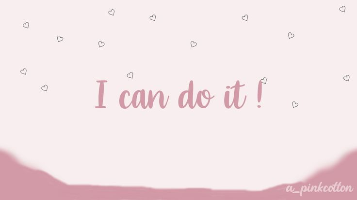

The Healing Hub ✨
This is your recharge zone — a collection of affirmations, quotes, and reminders to keep your mind focused, heart calm, and soul glowing 🌞

🌼 Daily Affirmations
🌸 “I am proud of how far I’ve come.”
🌿 “My potential is limitless.”
💫 “I attract good energy and growth.”
🌙 Mood Boosters
- Take a 5-minute stretch break
- Listen to calm music
- Step outside for sunlight
- Write down one thing you’re grateful for
💼 Career Motivation
- Plan your week with intention
- Work smart, rest often
- Stay curious, keep learning
- Celebrate progress, not perfection
🎧 Recommended Podcasts
On Purpose with Jay Shetty
The Mindset Mentor
| Activity | Duration | Effect |
|---|---|---|
| Deep Breathing | 5 mins | Relaxes mind |
| Journaling | 10 mins | Brings clarity |
| Listening to Affirmations | 8 mins | Boosts confidence |
Consistency turns small habits into big changes 🌿